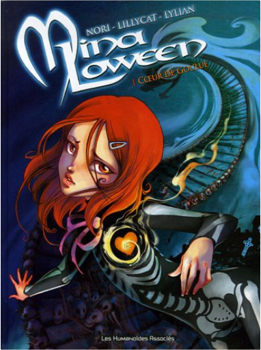
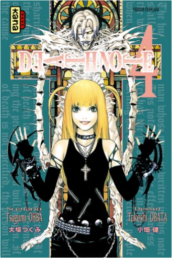

Books
Movies
Albums
Videogames
Games
BD
BD Camille
Blu-ray
Business
Camille
Comics
Cooking
Lego
Manga
Pauline
Photography
Star Wars
T'choupi
Travel
TV Shows
Un livre dont vous êtes le héro
Vinyl
Walt Disney
60
61
62
63
64
l'ile aux câlins
Carl Norac

mina loween, tome 1 : coeur de goulue
nori, lylian, lillycat
4
bébé s'exprime par signes
christine nougarolles, anaïs galon
batman - saga de ra's al ghul
dennis o'neil
La saga de Ra's Al Ghul - LA SAGA DE RA'S AL GHUL
death note, tome 1
tsugumi ohba, takeshi obata
4.5
death note, tome 2
tsugumi ohba, takeshi obata
5
death note, tome 3
tsugumi ohba, takeshi obata
5

death note, tome 4
tsugumi ohba, takeshi obata
4.5
death note, tome 5
tsugumi ohba, takeshi obata
5
death note, tome 6
tsugumi ohba, takeshi obata
5
death note, tome 7
tsugumi ohba, takeshi obata
5
death note, tome 8
tsugumi ohba, takeshi obata
3
60
61
62
63
64


 Made with Delicious Library Made with Delicious Library
Made with Delicious Library Made with Delicious Library